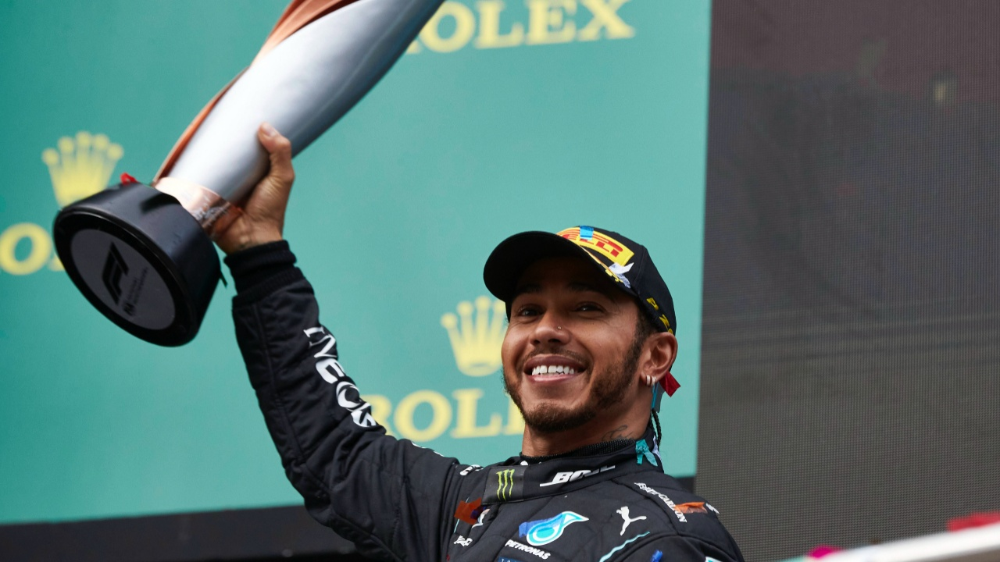
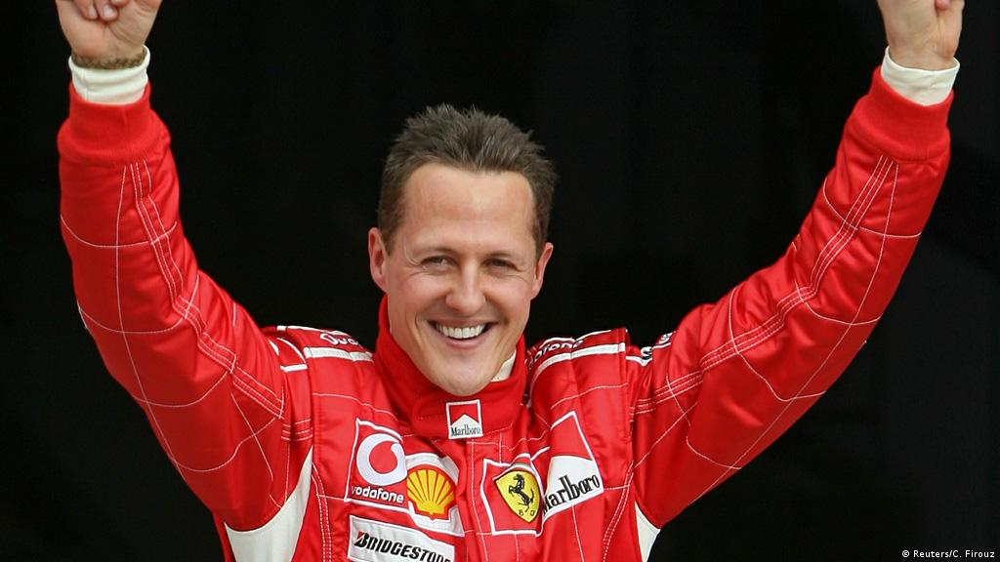
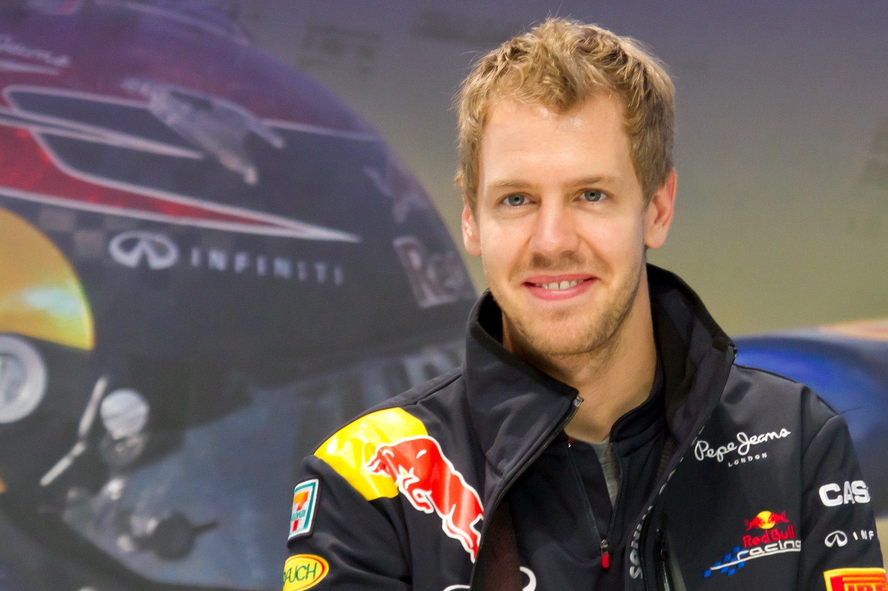
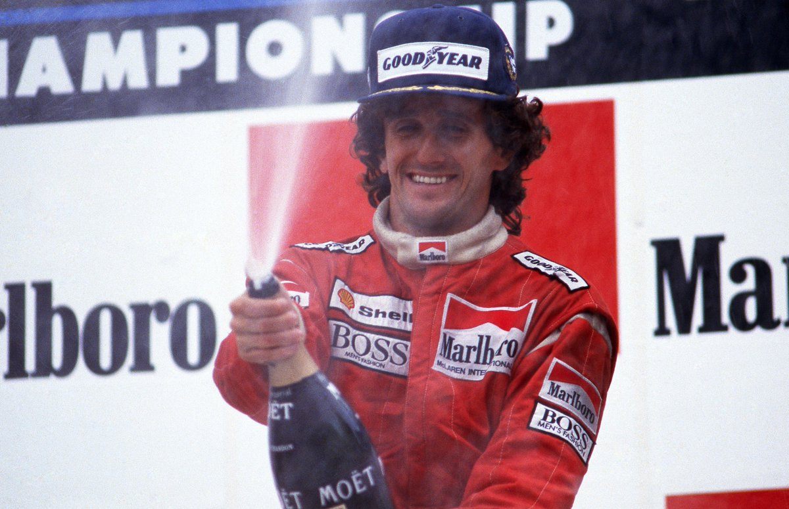
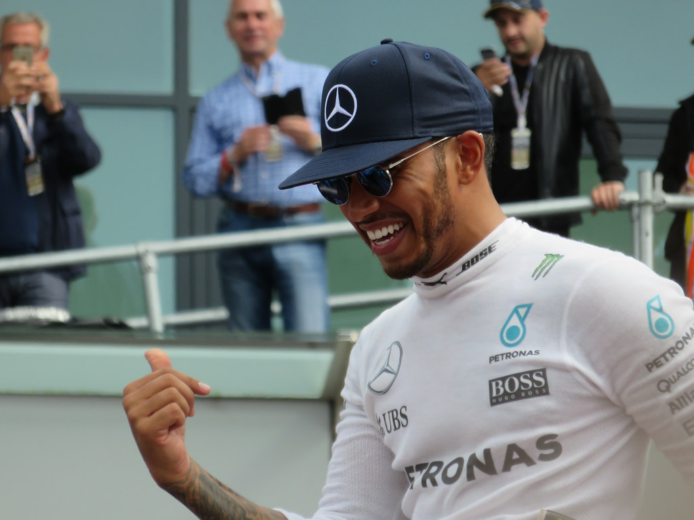
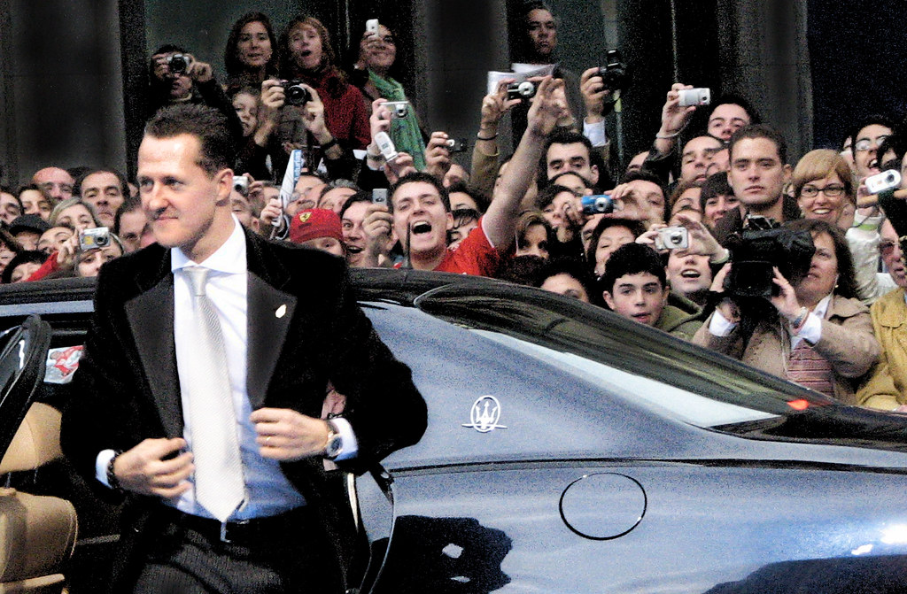
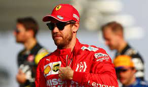
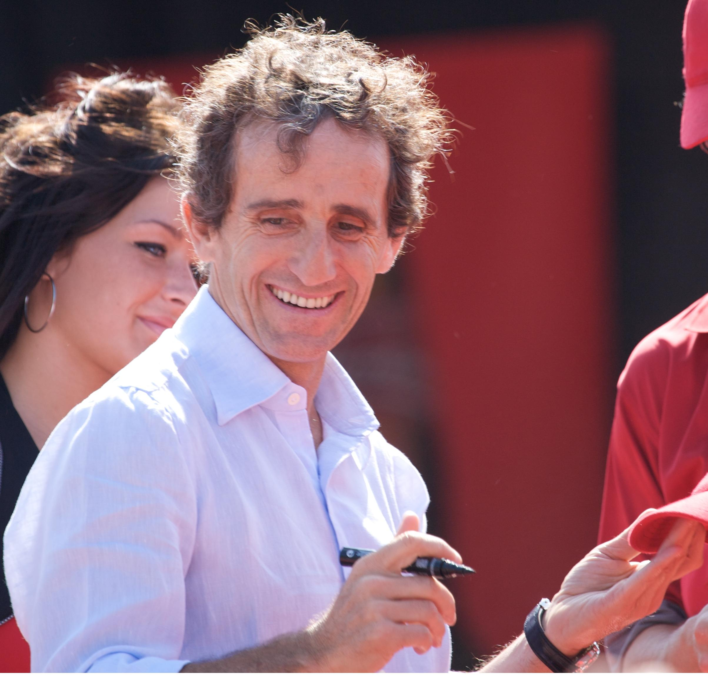

|
|
|---|
|
|
|---|
LOS 4 PILOTOS CON MÁS VICTORIAS DEL MUNDO
Lewis Hamilton.
|
 |
|---|---|
Michael Schumacher.
|
 |
Sebastian Vettel.
|
 |
Alain Prost.
|
 |
BIOGRAFÍAS
Piloto británico, nació el 07 Enero 1985.
En Fórmula 1 desde 2007 hasta 2012, fue piloto de la
escudería McLaren, con la cual fue campeón en 2008
y subcampeón en 2007. A partir de 2013, se convirtió en
piloto de Mercedes, resultando campeón en 2014, 2015,
2017, 2018, 2019, 2020, igualando los 7 títulos de Michael
Schumacher, y subcampeón en 2016 y 2021. Ha logrado
alzarse con más de 103 victorias en Grandes Premios
a lo largo de su carrera en la Fórmula 1.
A Hamilton se le atribuye el mérito de promover el
seguimiento mundial de la Fórmula 1 al atraer a una
audiencia más amplia fuera del deporte, en parte debido
a su estilo de vida de alto perfil y otras empresas,
incluido su activismo ambiental y social, así como sus
experiencias en la música y la moda.
Hamilton ha sido blanco de abusos racistas a lo largo de su
carrera y ha sido franco en sus críticas a la política
racial en la F1, además de pedir una mayor diversidad
en el deporte. Su trato por parte de los periódicos
británicos también ha sido criticado por tener prejuicios raciales.
|
 |
|---|---|
Nacido en Alemania el 3 de enero de 1969 es un
expiloto alemán de automovilismo. Ha ganado siete
campeonatos mundiales de Fórmula 1: dos con la
escudería Benetton en 1994 y 1995, y cinco con Ferrari
entre 2000 y 2004. Fue subcampeón en 1998 y 2006,
tercero en 1992, 1996 y 2005, cuarto en 1993 y quinto
en 1999. En 1997 acabó subcampeón, aunque fue posteriormente
descalificado sin puntos. Acumuló 91 victorias, 68 poles,
77 vueltas rápidas y 155 podios.
Es por ello el segundo piloto con más puntos en la
historia de Fórmula 1, sólo por detrás de Hamilton.
Se retiró de Fórmula 1 en 2006, pero regresó en 2010 a
las órdenes de Ross Brawn en el equipo Mercedes. Luego
se retiró de forma definitiva al terminar 2012 tras el
anuncio del fichaje de Lewis Hamilton.
En 2021, Netflix estrenó el documental Schumacher,
basado en su vida y carrera profesional.
|
 |
Nacido en Alemania el 3 de julio de 1987. Es un piloto
alemán de automovilismo de velocidad. Desde los 11 años
formó parte del Equipo Júnior de Red Bull. Ha ganado
cuatro títulos mundiales de Fórmula 1 con éste equipo
en 2010, 2011, 2012 y 2013, también tres subcampeonatos
en 2009, 2017 y 2018 (estos dos últimos con el equipo Ferrari).
En 2008 con el equipo Toro Rosso logró su primera victoria
en “El Gran Premio de Italia de 2008”. Se convirtió el
27 de octubre de 2013 en el piloto más joven de la historia
en ser tetracampeón de la “máxima categoría”del automovilismo.
Vettel se inició en el karting en 1995, ganando varios
campeonatos. En 2003 pasó a la disciplina de monoplazas,
ganando el campeonato alemán de Fórmula BMW con dieciocho
victorias en veinte carreras.
|
 |
Nacido en Francia el 24 de febrero de 1955. Es un expiloto
de automovilismo francés, uno de los pilotos de Fórmula
1 más exitosos de todos los tiempos. Compitió en el período
de 1980 a 1993, obteniendo 51 victorias, 106 podios,
cuatro campeonatos mundiales y cuatro subcampeonatos.
Algunas de esas marcas estuvieron imbatidas durante varios
años hasta que Michael Schumacher las batió en la década de 2000.
La rivalidad entre Alain Prost y Ayrton Senna fue posiblemente
la mayor de la historia del automovilismo, entre dos pilotos
que estaban muy por delante de casi cualquier otro en su época.
Años después de la muerte de Senna, el propio Prost reconoció
que sin el brasileño nada hubiera sido igual, se retroalimentaban
entre los dos gracias a su rivalidad. La época de los 80' fue
posiblemente la década de oro de la Fórmula 1. Prost era un
piloto caracterizado por ser muy minucioso en todo lo que
hacía, cuidando al más mínimo detalle cada parte de su monoplaza,
cada parte de su conducción y sus posibilidades en el mundial.
Se reveló como el mejor estratega de su época en el aspecto
técnico. Adicionalmente, Prost resultó ser el piloto más
ganador durante la época en que quizás fue más complicado
hacerlo, sobretodo por las características y especificaciones de
los automóviles que condujo y su gran complejidad.
Fue muy criticado ya que muchas de las victorias que obtuvo
fueron por estar en segundo puesto y la retirada del que iba
en primer puesto, dejando entonces como vencedor a Alain
(las retiradas solían ser por fallos de motor, etc).
|
 |
VÍDEOS DE PILOTOS